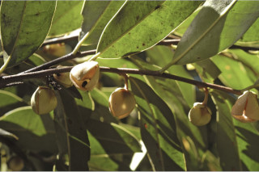
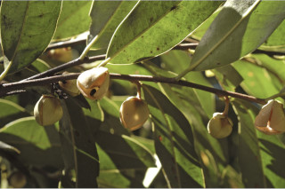
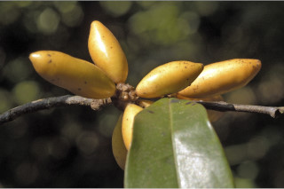
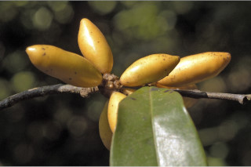

| Habit : | Small trees , 5-7 m tall. |
| Leaves : | Leaves simple , alternate , distichous ; petioles 0.6-1 cm long, canaliculate , glabrous ; lamina 8-22 x 4-4.5 cm, linear-lanceolate , apex shortly acuminate , base cuneate , coriaceous , glabrous , often black dotted beneath; midrib canaliculate above; secondary_nerves 13-25 pairs, slender, looped at margin; tertiary_nerves coarsely reticulate , not prominent. |
| Inflorescence / Flower : | Flowers solitary , axillary , purple with yellow tinge; pedicels 7-12 mm long, pubescent . |
| Fruit and Seed : | Aggregated 1-seeded berry , nearly sessile , ellipsoid , apex apiculate , 1.5-2.5 cm long, glabrous , yellowish when ripe. |
 

 
